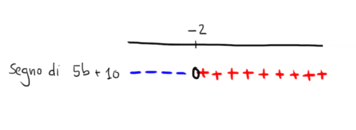
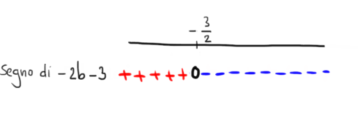
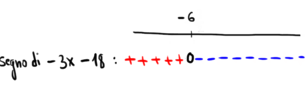

Studiare il paragrafo 1) Formula risolutiva disponibile QUA
Copiare e compilare la seguente tabella, traducendo le informazioni nei linguaggi parlato, simbolico e grafico:
| linguaggio parlato | linguaggio simbolico | linguaggio grafico |
|---|---|---|
|
|
\(5b +10 > 0\) se \(b > -2\) |
 |
|
|
\(-2b -3 \lt 0\) se \(b > -\dfrac{3}{2}\) |
 |
|
Il polinomio \(11b - 3\) ha segno \(\color{red}{\boldsymbol{+}}\) se \(b\) è più grande di \(\dfrac{3}{11}\) |
|
|
|
|
\(-b -7 \lt 0\) se \(b \gt -7\) |
|
|
|
 |
Stabilire per quali valori di \(a\) il prodotto di polinomi \[ \left(4a + 5\right)\cdot\left(-2a + 7\right)\cdot\left(-a + 2\right) \] è negativo
Suggerimeto:
Analizzate il segno di ciascuno dei tre fattori e fate il grafico dei segni:
\[
\underset{\color{red}{\text{1° fattore}}}{\underbrace{\color{red}{\left(4a + 5\right)}}} \cdot
\underset{\color{blue}{\text{2° fattore}}}{\underbrace{\color{blue}{\left(-2a + 7\right)}}} \cdot
\underset{\color{orange}{\text{3° fattore}}}{\underbrace{\color{orange}{\left(-a + 2\right)}}}
\]
Soluzione:
\(x \lt -\dfrac{5}{4} \quad\text{oppure}\quad 2 \lt x \lt \dfrac{7}{2} \)